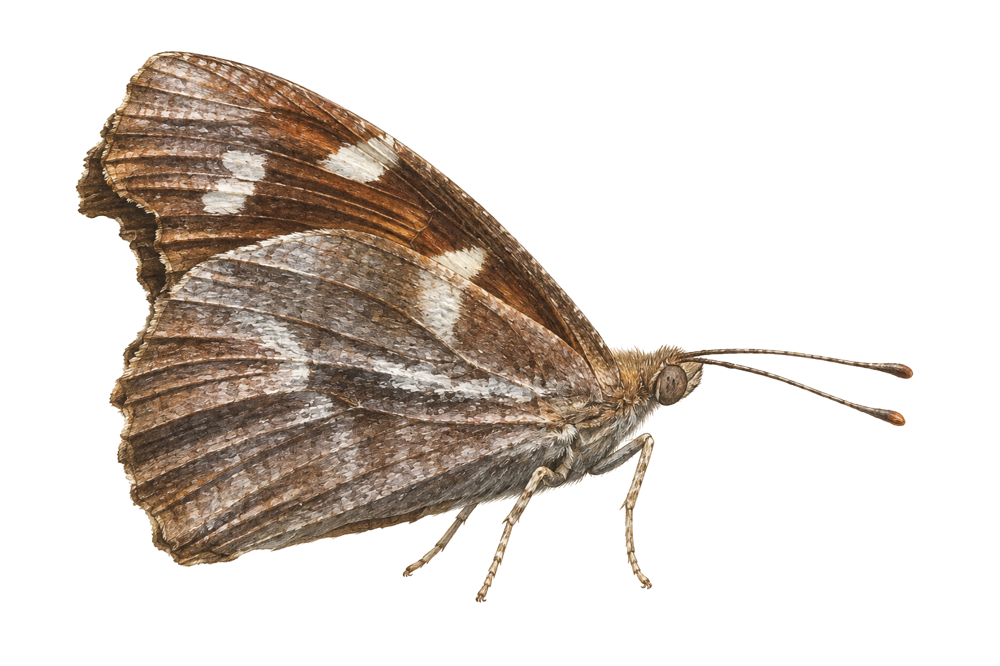

Nymphalidae · 147 / 165
Libythea narina
Libythea narina

বৈশিষ্ট্য ও শনাক্তকরণ
Libythea গণের দক্ষিণাঞ্চলীয় প্রজাতি। স্থানীয় সূত্রে অল্প নমুনার রেকর্ডই প্রধান; বিস্তারিত রূপবর্ণনা নিশ্চিত করা যায়নি।
স্ত্রী ও পুরুষের পার্থক্য
পর্যালোচিত সূত্রে নির্ভরযোগ্য বাহ্যিক স্ত্রী-পুরুষ পার্থক্য নিশ্চিত করা যায়নি।
আকার
ডানা মেলে বিস্তার ৪০–৫০ মিমি; সুমাত্রার প্রজাপতির গ্রন্থে প্রজাতির সাধারণ মান। মিয়াকোর রেকর্ডকৃত নমুনার পরিমাপ নয়।
ওকিনাওয়ার দ্বীপে রেকর্ড
মিয়াকোতে ২০ জুন ২০০৫ সংগৃহীত একটি নমুনা জাপানের প্রথম রেকর্ড হিসেবে তালিকাভুক্ত।
আবাসস্থল
মিয়াকোতে পছন্দের পরিবেশের বিস্তারিত নিশ্চিত নয়।
জীবনযাপন ও অতিরিক্ত তথ্য
স্থানীয় সংকলন জানায়, মূল বইয়ের ছবির ও লেখার লিঙ্গপরিচয়ে অমিল আছে। প্রতিষ্ঠিত বাসিন্দা হিসেবে ধরা হয়নি।
শূককীট ও খাদ্য উদ্ভিদ
পর্যালোচিত স্থানীয় সূত্রে খাদ্যগাছের নির্দিষ্ট তথ্য নেই। ওকিনাওয়ার শূককীটের তথ্য নিশ্চিত করা যায়নি।
তথ্যসূত্র ও সহায়ক পাঠ
- 沖縄蝶類生態図鑑：アジアテングチョウ
ডেটায় উল্লেখিত সূত্র দেখার তারিখ: 2026-11-10 - Kupu-kupu di Sumatera：スリウィジャヤ大学リポジトリ
ডেটায় উল্লেখিত সূত্র দেখার তারিখ: 2026-11-10
তথ্য সরবরাহকৃত ডেটার উপর ভিত্তি করে তৈরি (হালনাগাদ: ১০ নভেম্বর ২০২৬)। কোনো দ্বীপের রেকর্ড সেখানে বর্তমান স্থায়ী বসবাস বা সহজে দেখা পাওয়ার নিশ্চয়তা নয়। চিত্র নির্দেশক; শনাক্তকরণে বাস্তব নমুনা ও সূত্র মিলিয়ে দেখুন।